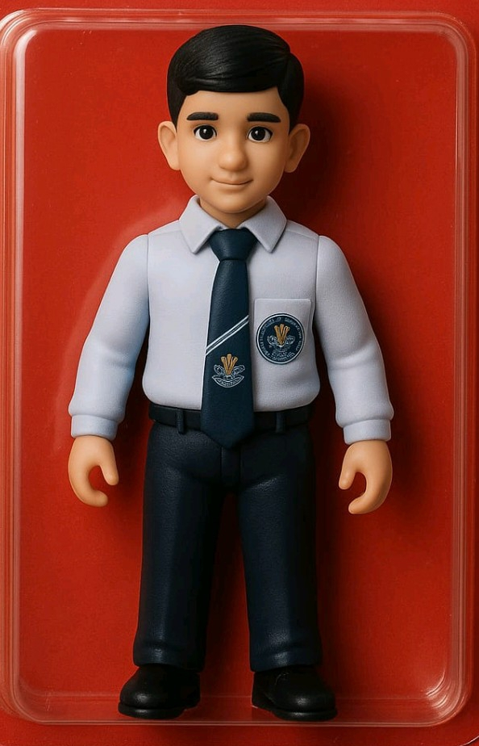

Who Am I?
Hey there! I'm ZT Playz 9.0, a passionate Free Fire player and content creator with over 6 years of experience in the gaming industry.
What started as a hobby quickly turned into a full-time career as I fell in love with the competitive nature of Free Fire and the joy of sharing my gameplay with others.
My mission is to entertain, educate, and build a community of like-minded gamers who share the same passion for Free Fire.
My Journey
From casual player to content creator
First Discovered Free Fire
Started playing Free Fire casually with friends, quickly fell in love with the game mechanics and competitive aspects.
Reached Heroic Rank
Achieved Heroic rank for the first time, marking my transition from casual to competitive play.
Started YouTube Channel
Created my YouTube channel to share gameplay tips and tricks, gaining my first 1,000 subscribers within 3 months.
First Sponsorship
Landed my first gaming gear sponsorship, marking the beginning of my professional gaming career.
100 Subscribers
Reached the 100 subscribers milestone on YouTube, growing a loyal community of gamers.
Free Fire Stats
My competitive performance metrics
Master
Current Rank
10.5
K/D Ratio
10245+
Matches Played
85%
Win Rate

My Main Character
I specialize in playing as dj Alok, using his healing ability to support my team and gain tactical advantages in battles.
Ability
Drop the Beat
Specialty
Team Support
Playstyle
Aggressive Support